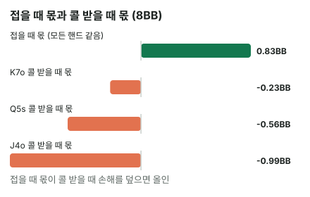

안녕하세요. I17에서 8BB의 K♦7♣는 콜 받으면 손해인데도 올인이 이득이었죠. 이득이 "상대가 접는 판"에서 나온다고만 하고 넘어갔어요.
오늘은 그 말을 숫자로 쪼개 볼게요. 올인 하나의 손익을 "상대가 접을 때 몫"과 "콜 받을 때 몫" 두 개로 나누면, 어떤 핸드가 올인이고 어떤 핸드가 폴드인지 그 경계까지 보여요.
이 글에서 배울 것
- 폴드 에퀴티의 뜻과, 그걸 BB로 센 접을 때 몫 구하기
- 올인 손익 = 접을 때 몫 + 콜 받을 때 몫으로 나누는 법(금액은 폴드했을 때 스택 기준)
- 같은 장면이면 접을 때 몫은 모든 핸드가 같고, 차이는 콜 받을 때에서 난다는 것 — 그래서 생기는 올인 경계
1단계. 폴드 에퀴티란?
폴드 에퀴티 = 상대가 접어서 이기는 길이에요. 카드를 끝까지 깔지 않고 이기는 거죠. 오늘은 이 길이 벌어 주는 돈을 BB로 세서 접을 때 몫이라고 부를게요.
이름에 "에퀴티"가 붙은 건, 에퀴티가 원래 팟에서 우리가 가져오는 몫이기 때문이에요. 카드로 이겨서 가져오는 몫 말고, 상대가 접어서 가져오는 몫이 하나 더 있다는 뜻이죠.
비유하면 가위바위보에서 상대가 기권하는 것이에요. 우리가 무엇을 냈든 이겨요. 올인은 이렇게 두 길로 이겨요. 상대가 접으면 블라인드를 가져오고, 콜하면 카드를 끝까지 깔아 에퀴티만큼 가져와요.
2단계. 장면과 세 가지 금액
기준은 "폴드했을 때 스택"
I17과 같은 장면이에요. 둘만 남았고 Hero는 SB, 블라인드 SB 0.5BB·BB 1BB, 앤티 없음, 두 사람 모두 8BB.
올인할지 말지는 폴드와 비교하는 결정이에요. 그래서 금액도 폴드했을 때를 기준으로 세요. Hero가 폴드하면 SB 0.5BB를 잃고 스택이 7.5BB 남아요.
- 상대가 접으면: 스택 8 + 1 = 9BB → 9 − 7.5 = +1.5BB
- 콜 받고 이기면: 스택 16BB → 16 − 7.5 = +8.5BB
- 콜 받고 지면: 스택 0BB → −7.5BB
3단계. 접는 길만으로 본전이 되려면?
본전 폴드율
본전 폴드율 = 콜 받으면 늘 진다고 칠 때, 상대가 접어야 하는 최소 비율이에요.
본전 폴드율 = 7.5(지면 잃는 돈) ÷ (1.5(접으면 버는 돈) + 7.5) = 약 83.3%
여섯 번 중 다섯 번은 접어야 해요. 비유하면 작은 돈을 벌자고 큰 돈을 맡기는 내기예요. 맡긴 돈이 클수록 거의 매번 성공해야 본전이죠.
실제로는 얼마나 접을까
뚝섬 AOF 차트 엔진(칩 기준, 상대도 최선으로 콜한다고 보는 근사)으로는 8BB에서 상대가 접는 비율이 약 55.5%예요. 상대가 콜하는 핸드 묶음을 콜 범위라고 하는데(I17 표의 BB 콜 칸), 전체의 약 44.5%예요.
이 55.5%는 엔진이 "상대도 최선으로 콜한다"고 가정해서 낸 값이에요. 그 가정 안에서 55.5%는 83.3%에 한참 못 미쳐요. 그러니 접는 길만으로는 본전이 안 되고, 콜 받는 판에서 잃는 돈이 작아야 올인이 이득이 돼요. 콜 받았을 때 늘 지는 게 아니라 에퀴티만큼은 가져오니까요.
4단계. K♦7♣로 나눠 보기


엔진 기준 상대 콜 범위를 상대로 K♦7♣의 에퀴티(비기면 반으로 친 몫)는 약 43.6%예요. 반올림 오차를 줄이려고 식에서는 %를 소수 다섯 자리로 바꿔 써요(55.5% → 0.55524).
① 접을 때 몫(폴드 에퀴티를 BB로 센 것)
0.55524(상대가 접는 비율) × 1.5(접으면 버는 돈) = 약 +0.83BB
② 콜 받을 때 몫
콜 받은 판 평균 = 0.43582(에퀴티) × 8.5(이기면 버는 돈) − 0.56418(지는 몫) × 7.5(지면 잃는 돈) = 3.70447 − 4.23135 = 약 −0.53BB 0.44476(콜 받는 비율) × (−0.52693)(콜 받은 판 평균) = 약 −0.23BB
③ 합치기
0.83286 − 0.23436 = 약 +0.6BB → 올인
I17에서 본 +0.6BB가 이렇게 나와요. 콜 받는 판은 평균 −0.53BB로 손해지만, 그 판은 44.5%만 오고 접는 판의 +0.83BB가 그걸 덮어요.
5단계. 경계에 가까운 Q♠5♠


같은 장면에서 Q♠5♠는 콜 범위 상대 에퀴티가 약 39.1%로 K♦7♣보다 낮아요.
- ① 접을 때 몫: K♦7♣와 똑같이 0.55524 × 1.5 = 약 +0.83BB
- ② 콜 받은 판 평균 = 0.39056 × 8.5 − 0.60944 × 7.5 = 3.31976 − 4.5708 = 약 −1.25BB, 0.44476 × (−1.25101) = 약 −0.56BB
- ③ 0.83286 − 0.5564 = 약 +0.28BB → 아직 올인

왜 그럴까: 접을 때 몫은 같고, 경계는 콜 받을 때에서 생겨요
접을 때 몫은 왜 핸드마다 같을까
상대가 접을지는 상대 카드가 정해요. 엔진은 우리 카드 때문에 상대 핸드가 조금 줄어드는 효과(카드 제거, I07에서 다뤄요)를 세지 않아서, 어떤 핸드로 올인하든 상대가 접는 비율이 같아요. 그래서 접을 때 몫은 모든 핸드가 +0.83BB예요.
그래서 경계는 에퀴티 하나로 정해져요
올인이 이득이려면 콜 받을 때 몫의 손해가 +0.83BB보다 작아야 해요. 이걸 콜 범위 상대 에퀴티로 바꿔 보면 경계가 나와요. 세 걸음이에요.
걸음 1. 콜 받은 판 평균을 에퀴티 하나로 쓰기
콜 받은 판 평균 = 에퀴티 × 8.5(이기면 버는 돈) − (1 − 에퀴티) × 7.5(지면 잃는 돈) = 에퀴티 × 16 − 7.5
16은 이기면 버는 8.5와 지면 잃는 7.5를 더한 값이에요. 에퀴티가 0.01 오를 때마다 콜 받은 판이 0.16BB씩 좋아진다는 뜻이죠.
걸음 2. 콜 받은 판 하나당 버틸 수 있는 손해
0.83286(접을 때 몫) ÷ 0.44476(콜 받는 비율) = 약 1.873
접는 판이 벌어 준 돈을 콜 받는 판에 나눠 주면, 콜 받은 판 하나당 평균 1.87쯤까지(단위는 BB) 잃어도 본전이에요.
걸음 3. 경계 에퀴티
에퀴티 × 16 = 7.5 − 1.873 = 5.627 → 에퀴티 = 5.627 ÷ 16 = 약 0.352
이 0.352는 엔진이 준 숫자가 아니라 걸음 1·2의 숫자로 직접 나눈 값이에요. 그래서 아래에서는 0.35쯤으로 줄여 부를게요.
정리하면 이 장면에서는 콜 범위 상대 에퀴티가 0.35쯤(100판에 35판 몫) 넘는 핸드가 올인이에요. K♦7♣(약 43.6%)·Q♠5♠(약 39.1%)는 넘어요. 핸드의 이름보다 "상대가 콜할 핸드들 사이에서 얼마나 버티나"가 올인을 정하는 거예요.
자주 하는 실수
실수 1. "83%나 접어야 하니 올인은 무리" 본전 폴드율만 보고 올인을 포기하는 실수예요. 83.3%는 콜 받으면 늘 진다고 쳤을 때의 숫자예요. 실제로는 콜 받아도 K♦7♣는 약 43.6%를 가져오니, 상대가 55.5%만 접어도 올인이 이득이었어요. 대신 본전 폴드율은 블러프만으로 이길 때의 상한이라고 읽어요.
실수 2. 시작 스택 8BB를 기준으로 금액 세기 "상대가 접으면 8에서 9로, +1BB"라고 세는 실수예요. 올인은 폴드와 비교하는 결정이라, 기준은 폴드했을 때 스택 7.5BB예요. 그러면 접으면 +1.5BB죠. 0.5BB 차이 같아도 접을 때 몫 전체가 달라져요. 대신 세 금액은 언제나 "폴드하면 남는 스택"에서 빼서 세요.
실수 3. 접을 때 몫을 핸드마다 다르게 보기 "K7은 강해 보이니 상대가 더 접겠지"처럼 생각하는 실수예요. 상대는 Hero 카드를 못 봐요. 엔진 기준(카드 제거를 세지 않으면) 같은 장면에서 상대가 접는 비율은 Hero 핸드와 상관없이 같아서, 접을 때 몫은 K♦7♣도 Q♠5♠도 +0.83BB였어요. 대신 핸드끼리 비교할 때는 콜 받을 때 몫만 비교해요.
"그럼 아무 핸드나 올인하면 되나요?"
좋은 질문이에요. 아니에요. 같은 8BB에서 J♣4♦를 나눠 볼게요. 왜 그럴까의 경계 0.35쯤과 견주어 보세요.
접을 때 몫은 똑같이 약 +0.83BB예요. 그런데 콜 범위 상대 에퀴티가 약 32.9%라, 콜 받은 판 평균이 약 −2.24BB, 콜 받을 때 몫이 약 −0.99BB예요. 접을 때 몫으로 다 못 덮어서 합이 약 −0.16BB, 폴드가 나아요.
J♣4♦는 경계 0.35쯤을 넘지 못하는 핸드예요. 접는 길은 모든 핸드에게 똑같이 열려 있지만, 콜 받았을 때 너무 많이 지는 핸드는 그 길만으로 버틸 수 없어요.
숫자가 뒤집히는 지점
기준은 하나예요. 콜 받을 때 몫의 손해가 접을 때 몫보다 커지는 핸드부터 폴드. 이 장면에서는 그 경계가 콜 범위 상대 에퀴티 0.35쯤이에요.
선생님의 한마디
올인을 고민할 때 이렇게 해요.
- 합이 0 근처인 경계 핸드는, 상대가 엔진보다 넓게 콜하는지 좁게 콜하는지 먼저 떠올리기(넓게 콜하면 접을 때 몫이 줄어요)
- 상대가 유난히 잘 접는 사람이면 접을 때 몫이 커져서, 경계 에퀴티도 아래로 내려간다고 생각하기
- 같은 상대와 여러 번 붙었다면 실제로 몇 번 접었는지 기억해 두기
연습 문제 (같은 자리, 두 사람 스택만 6BB로)
두 몫은 직접 나눠 보고, 뚝섬 AOF 차트(새틀 프리플랍 차트)에서 그외 게임들 → 테이블 인원 2명 → 포지션 SB → 내 스택·상대 스택 6BB로 넣어 그 핸드가 올인 칸인지 확인해 보세요. 화면은 실전 보정으로 조금 좁게 나올 수 있어요.
6BB에서 엔진 기준 상대는 약 45.7% 접어요. 세 금액은 직접 구해 보세요.
문제 1. Q♠5♠의 콜 범위 상대 에퀴티는 약 42.1%예요. 올인? 폴드?
정답 보기
세 금액: 폴드하면 스택 5.5BB. 접으면 7BB로 7 − 5.5 = +1.5BB, 이기면 12BB로 12 − 5.5 = +6.5BB, 지면 0으로 −5.5BB. ① 0.45722 × 1.5 = 약 +0.69BB ② 콜 받은 판 평균 = 0.42072 × 6.5 − 0.57928 × 5.5 = 2.73468 − 3.18604 = 약 −0.45BB, 0.54278 × (−0.45142) = 약 −0.25BB ③ 0.68583 − 0.24502 = 약 +0.44BB → 올인
문제 2. T♣6♦의 콜 범위 상대 에퀴티는 약 34.8%예요. 올인? 폴드?
정답 보기
① 접을 때 몫은 똑같이 약 +0.69BB ② 콜 받은 판 평균 = 0.34836 × 6.5 − 0.65164 × 5.5 = 2.26434 − 3.58402 = 약 −1.32BB, 0.54278 × (−1.31965) = 약 −0.72BB ③ 0.68583 − 0.71628 = 약 −0.03BB → 아주 근소하게 폴드
핵심 정리
- 폴드 에퀴티 = 상대가 접어서 이기는 길. BB로 세면 접는 비율 × 접으면 버는 돈
- 올인 손익 = 접을 때 몫 + 콜 받을 때 몫. 금액은 폴드했을 때 스택 기준
- 본전 폴드율은 콜 받으면 늘 진다고 칠 때의 값이라, 실제 올인 판단에는 콜 받을 때 가져오는 몫까지 더해야 해요
- 같은 장면이면 접을 때 몫은 모든 핸드가 같아서, 올인 경계는 콜 범위 상대 에퀴티 하나로 정해져요
정리하며
오늘은 올인의 손익을 두 몫으로 쪼갰어요.
8BB에서 K♦7♣는 접을 때 몫 +0.83BB, 콜 받을 때 몫 −0.23BB로 합이 +0.6BB였죠. Q♠5♠는 접을 때 몫이 같고 콜 받을 때 손해가 더 커서 +0.28BB, J♣4♦는 손해가 접을 때 몫을 넘어 폴드였어요. 접을 때 몫이 모든 핸드에 같으니, 올인의 경계는 콜 범위 상대 에퀴티 0.35쯤에서 그어졌어요.
다음 글 I19에서는 오늘 배운 두 몫을 실제 스팟에 써 봐요. SB 8BB에서 Q6o로 둘만 남았을 때 올인이 맞는지 따라가요.
AI 작성 · 숫자는 계산 검증 · 뚝섬 AOF 차트 엔진의 올인/폴드 이론값 (헤즈업 SB 대 BB · 앤티 없음 · 칩 기준 · 카드 제거 없음 · 화면의 실전 보정은 넣지 않음) · 올인 결정이라 이번 결정의 최종 결과